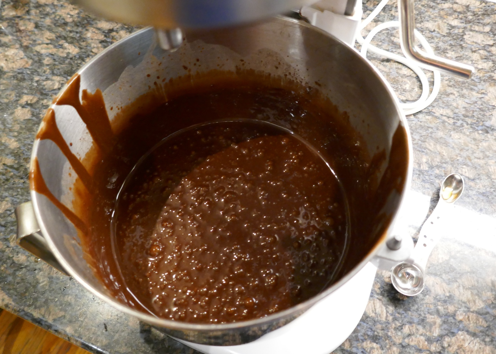
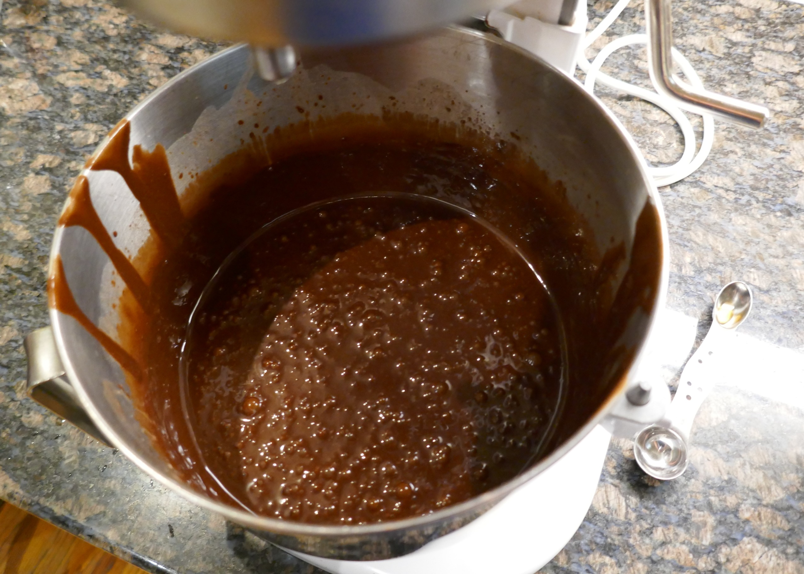

Chocolate Cake with Peanut Butter Frosting
September 3, 2024 | Jump to Cake Recipe, Frosting Recipe

I love this cake recipe because it is what I always have on my birthday. Usually, I'm not the one to make it, but this year, for my 17th birthday, I helped. My birthday is September 2nd so usually it lands somewhere near Labor Day weekend. This is very nice because I usually get a three-day weekend for my birthday. Even better, this year we also had the day after Labor Day off from school, so I had a four-day weekend. To celebrate, my family and I decided to go to New York and visit my grandmother. She is 93 years old and lives in a brownstone in Brooklyn. She stays with my aunt and uncle. However, over the weekend my uncle was dropping my cousin off at college (I sure wish my school started on Labor Day instead of three weeks early). So, I would like to thank my aunt for letting me borrow her kitchen, so I could make this blog entry. Her kitchen is honestly probably very similar to Deb Perelman’s on the smittenkitchen.com blog. Both are in New York and are small. However, my aunt and kitchen were recently renovated with granite countertops.

 

My family and I flew into New York Saturday morning. On Sunday we went to the tenement museum, which was interesting and relevant to what I am learning in history class. Then on Monday it was my birthday, but also Labor Day so not a lot of places were open. Because nothing was open my family and I went to Prospect Park which is near my grandmother’s house in Brooklyn. He walked around that park and at this time of year the weather in New York was much nicer than in Houston. After we got home my mother, and I made the cake together. She probably has the most experience making it because nowadays my grandmother, aunt and uncle usually pick up an ice cream cake at a store such as Haagen-Dazs or Ben and Jerry’s.


Now as you can probably tell this is not some family heirloom recipe that's been passed down for generations. To be honest, these are just recipes that my mother found on the internet, however even though we Doneker's don't have our own recipe chocolate cake with peanut butter frosting is a tradition on birthdays. My grandmother made this cake for him when he was a kid, and he still asks for it on his birthday to this day.
Over the years my mother has tried making numerous chocolate cake and peanut butter frosting recipes making this cake for both me and my father’s birthdays. We have decided that we like this recipe and so now it is what we make.


My mother suggests using a kind of artificial peanut butter like JIF or Skippy in the frosting because it will have a better consistency. This will make the frosting easier to apply on the cake and stay there. Also, she said that if you want more than two layers you can double the frosting recipe and cut both cakes into two layers and make a four-layer cake.
Chocolate Cake Recipe
Source: Add A Pinch
Ingredients
- 2 cups all-purpose flour
- 2 cups sugar
- 3/4 cup unsweetened cocoa powder
- 2 teaspoons baking powder
- 1 1/2 teaspoons baking soda
- 1 teaspoon kosher salt
- 1 teaspoon espresso powder
- 1 cup milk
- 1/2 cup vegetable oil
- 2 large eggs
- 2 teaspoons vanilla extract
- 1 cup boiling water
- Peanutbutter frosting recipe
Instructions
- Preheat oven to 350º F. Prepare two 9-inch cake pans by spraying with baking spray, buttering and lightly flouring.
- Add flour, sugar, cocoa, baking powder, baking soda, salt and espresso powder to a large bowl or the bowl of a stand mixer. Whisk through to combine or, using your paddle attachment, stir through flour mixture until combined well.
- Add milk, vegetable oil, eggs, and vanilla to flour mixture and mix together on medium speed until well combined. Reduce speed and carefully add boiling water to the cake batter until well combined.
- Distribute cake batter evenly between the two prepared cake pans. Bake for 30-35 minutes, until a toothpick or cake tester inserted in the center of the chocolate cake comes out clean.
- Remove from the oven and allow to cool for about 10 minutes, remove from the pan and cool completely.
- Frost the cake with Peanut Butter Frosting.
Peanut Butter Frosting Recipe
Source: Sally's Baking Addiction
Ingredients
- 5 Tablespoons unsalted butter, softened to room temperature
- 1 cup creamy peanut butter
- 1 cup confectioners’ sugar
- 1/3 cup heavy cream, at room temperature
- 1 teaspoon pure vanilla extract
- 1/4 teaspoon salt
Instructions
- With a handheld or stand mixer fitted with a paddle or whisk attachment, beat the butter on medium speed until creamy, about 2 minutes.
- Add the peanut butter, confectioners’ sugar, heavy cream, vanilla extract, and salt with the mixer running on low. Increase to high speed and beat for 3 full minutes. Add up to 1/4 cup more confectioners’ sugar if frosting is too thin or another Tablespoon of cream if frosting is too thick.
- Cover tightly and store for up to 1 week in the refrigerator.
About Me
Hello and welcome to my food blog. My name is John Doneker, and I am a student at Lamar High School in Houston, Texas. As for food, my favorite thing to make is fruit pies. I get whatever fruit is in season and I baked them into a crust I made myself. I also like to make fresh pizza and pasta. Then on Thanksgiving and Christmas I make souffles for breakfast. Most days at home my parents cook because I am busy with schoolwork and swim practice. This means that the only time I cook is on a weekend that isn’t too busy or holidays. When I do cook on, I want to make something high quality that takes at least a little bit of effort. Things like homemade pasta, pizza and pie crust are worth the extra effort because you understand the food made. There also could be sort of an IKEA effect where you are more satisfied with the thing that you helped create.
The main inspiration behind writing this food blog is the wonderful smittenkitchen.com. We have been analyzing the blog in my English class and while reading it Deb Perelman’s love of food was so inspirational. I would like to continue my culinary journey by making delicious recipes and refining my skills. I will probably continue to just occasionally cook at home until college. During college, I will be away from my parents, and they can’t cook for me so cooking meals for myself everyday becomes the most economical option.
The kitchen at my home in Houston is nice. The oven stove and sink are arranged in a triangular set which my cousin thought was the best when he visited. The stove is on an island opposite the sink, and the oven is off to the side.